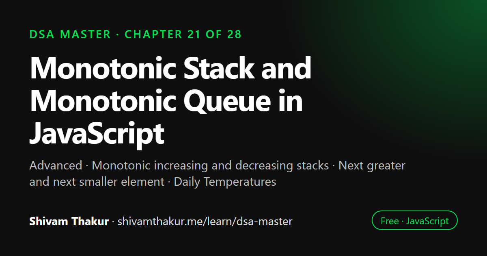

Chapter 21 of 28 · Advanced
Monotonic Stack and Monotonic Queue in JavaScript
The Monotonic Stack & Monotonic Queue Masterclass

A monotonic stack keeps its elements in increasing or decreasing order by popping anything that would break the order before pushing. That turns next-greater and next-smaller element problems from O(n²) into O(n). This chapter works through daily temperatures and largest rectangle in a histogram, then uses a monotonic deque to solve sliding window maximum in linear time.
In this chapter you will learn
- Monotonic increasing and decreasing stacks
- Next greater and next smaller element
- Daily Temperatures
- Largest Rectangle in a Histogram
- Sliding window maximum with a monotonic deque
21.0 The Problem: "Next Greater Element" and Why Brute Force Feels Unavoidable
The problem: given an array, for every element, find the next element to its right that's greater than it (or report none exists).
// Naive brute force
function nextGreaterElementNaive(nums) {
const result = new Array(nums.length).fill(-1);
for (let i = 0; i < nums.length; i++) {
for (let j = i + 1; j < nums.length; j++) {
if (nums[j] > nums[i]) {
result[i] = nums[j];
break;
}
}
}
return result;
}
// Time: O(n²) — a nested loop, exactly Chapter 1's classic quadratic signatureThis is Chapter 6 and Chapter 9's stack/heap toolkit's next natural extension: is there a data structure that lets us answer "what's the next greater element" for every position in a single O(n) pass? This chapter introduces the monotonic stack and monotonic queue — specialized usage disciplines (recall Chapter 6's core lesson: stacks and queues are restricted-interface structures, not new capabilities) that achieve exactly this.
21.1 The Monotonic Stack: Maintaining Order as You Go
Definition: A monotonic stack is a stack maintained so that its elements are always in strictly increasing (or decreasing) order from bottom to top — achieved by popping any elements that would violate this order before pushing a new element.
21.1.1 Solving "Next Greater Element" in O(n)
function nextGreaterElement(nums) {
const result = new Array(nums.length).fill(-1);
const stack = []; // will hold INDICES, maintaining a decreasing order of VALUES from bottom to top
for (let i = 0; i < nums.length; i++) {
// While the current element is GREATER than the value at the stack's top index,
// the current element IS that index's "next greater element" — resolve it!
while (stack.length > 0 && nums[i] > nums[stack[stack.length - 1]]) {
const indexToResolve = stack.pop();
result[indexToResolve] = nums[i];
}
stack.push(i);
}
return result; // any indices STILL in the stack at the end have no next greater element (-1, unchanged)
}
console.log(nextGreaterElement([2, 1, 2, 4, 3])); // [4, 2, 4, -1, -1]Dry Run
nums = [2, 1, 2, 4, 3]
result = [-1,-1,-1,-1,-1], stack = []
i=0 (val=2): stack empty, nothing to resolve. push 0. stack=[0]
i=1 (val=1): nums[1]=1 > nums[stack.top=0]=2? NO. push 1. stack=[0,1]
i=2 (val=2): nums[2]=2 > nums[stack.top=1]=1? YES!
pop 1. result[1] = 2. result=[-1,2,-1,-1,-1]
nums[2]=2 > nums[stack.top=0]=2? NO (not strictly greater). stop popping.
push 2. stack=[0,2]
i=3 (val=4): nums[3]=4 > nums[stack.top=2]=2? YES!
pop 2. result[2] = 4. result=[-1,2,4,-1,-1]
nums[3]=4 > nums[stack.top=0]=2? YES!
pop 0. result[0] = 4. result=[4,2,4,-1,-1]
stack now empty. push 3. stack=[3]
i=4 (val=3): nums[4]=3 > nums[stack.top=3]=4? NO. push 4. stack=[3,4]
Loop ends. Indices STILL in stack (3, 4) never found a next-greater element -> stay -1.
Final: [4, 2, 4, -1, -1] ✓Why This Is O(n), Not O(n²) — The Amortized Argument (A Direct Echo of Chapter 3's Sliding Window Analysis)
This is worth proving rigorously, because the nested while loop inside a for loop might look, at a glance, like Chapter 1's quadratic signature. The key insight, directly parallel to Chapter 3's sliding window "total pointer movement" analysis: every single index is pushed onto the stack exactly once, and popped at most once, across the ENTIRE algorithm's execution — not once per outer loop iteration. Since the total number of pushes is bounded by n, and the total number of pops is also bounded by n (you can't pop more times than you've pushed), the total work across the whole algorithm — summed across every iteration of both loops — is O(n) + O(n) = O(n), not O(n²). This exact "total operations across the whole run is bounded, even though a nested-loop-shaped structure exists" reasoning is one of the most important, recurring analytical tools in this entire book, appearing now for the third time (Chapter 3's sliding window, Chapter 11's BFS/DFS visited-tracking, and here).
21.2 Worked Problem: Daily Temperatures
The problem: given daily temperatures, for each day, find how many days you'd have to wait until a warmer temperature (or 0 if never).
function dailyTemperatures(temperatures) {
const result = new Array(temperatures.length).fill(0);
const stack = []; // indices, maintaining DECREASING temperature order bottom-to-top
for (let i = 0; i < temperatures.length; i++) {
while (stack.length > 0 && temperatures[i] > temperatures[stack[stack.length - 1]]) {
const indexToResolve = stack.pop();
result[indexToResolve] = i - indexToResolve; // the DISTANCE (days waited), not the temperature itself!
}
stack.push(i);
}
return result;
}
console.log(dailyTemperatures([73, 74, 75, 71, 69, 72, 76, 73]));
// [1, 1, 4, 2, 1, 1, 0, 0]21.3 Worked Problem: Largest Rectangle in a Histogram
The problem: given an array of bar heights representing a histogram (each bar has width 1), find the area of the largest rectangle that can be formed using contiguous bars.
Naive Approach: For Each Bar, Expand Left and Right
function largestRectangleNaive(heights) {
let maxArea = 0;
for (let i = 0; i < heights.length; i++) {
let left = i, right = i;
while (left > 0 && heights[left - 1] >= heights[i]) left--;
while (right < heights.length - 1 && heights[right + 1] >= heights[i]) right++;
maxArea = Math.max(maxArea, heights[i] * (right - left + 1));
}
return maxArea;
}
// Time: O(n²) worst case (e.g., all bars the same height, expansion is O(n) per bar)Optimized: Monotonic Increasing Stack
function largestRectangleArea(heights) {
const stack = []; // indices, maintaining INCREASING height order bottom-to-top
let maxArea = 0;
for (let i = 0; i <= heights.length; i++) {
const currentHeight = i === heights.length ? 0 : heights[i]; // sentinel: force final resolution
while (stack.length > 0 && currentHeight < heights[stack[stack.length - 1]]) {
const heightIndex = stack.pop();
const height = heights[heightIndex];
// The width extends from the element AFTER the new stack top, to the current index
const width = stack.length === 0 ? i : i - stack[stack.length - 1] - 1;
maxArea = Math.max(maxArea, height * width);
}
stack.push(i);
}
return maxArea;
}
console.log(largestRectangleArea([2, 1, 5, 6, 2, 3])); // 10 (bars of height 5,6 -> width 2 -> area 10)Dry Run (Abbreviated)
heights = [2, 1, 5, 6, 2, 3], process with sentinel 0 appended conceptually at the end
i=0 (h=2): stack empty. push 0. stack=[0]
i=1 (h=1): 1 < heights[0]=2? YES!
pop 0. height=2. width = stack empty -> i=1. area = 2*1=2. maxArea=2
push 1. stack=[1]
i=2 (h=5): 5 < heights[1]=1? No. push 2. stack=[1,2]
i=3 (h=6): 6 < heights[2]=5? No. push 3. stack=[1,2,3]
i=4 (h=2): 2 < heights[3]=6? YES!
pop 3. height=6. width = i - stack.top(2) - 1 = 4-2-1=1. area=6*1=6. maxArea=6
2 < heights[2]=5? YES!
pop 2. height=5. width = i - stack.top(1) - 1 = 4-1-1=2. area=5*2=10. maxArea=10
2 < heights[1]=1? No. push 4. stack=[1,4]
i=5 (h=3): 3 < heights[4]=2? No. push 5. stack=[1,4,5]
i=6 (sentinel h=0): 0 < heights[5]=3? YES!
pop 5. height=3. width = 6-4-1=1. area=3. maxArea stays 10.
0 < heights[4]=2? YES!
pop 4. height=2. width = 6-1-1=4. area=8. maxArea stays 10.
0 < heights[1]=1? YES!
pop 1. height=1. width = stack empty -> i=6. area=6. maxArea stays 10.
Final maxArea = 10 ✓ (matches expected output)21.4 The Monotonic Queue: Powering Sliding Window Maximum in O(n)
Recall Chapter 6's closing teaser: the deque is the exact structure used to optimize the Sliding Window Maximum problem. This section delivers on that promise.
The problem: given an array and a window size k, find the maximum value in every contiguous window of size k as it slides across the array.
Naive Approach
function maxSlidingWindowNaive(nums, k) {
const result = [];
for (let i = 0; i <= nums.length - k; i++) {
let maxInWindow = -Infinity;
for (let j = i; j < i + k; j++) {
maxInWindow = Math.max(maxInWindow, nums[j]);
}
result.push(maxInWindow);
}
return result;
}
// Time: O(n * k) — recomputing the max from scratch for every windowOptimized: Monotonic Decreasing Deque
function maxSlidingWindow(nums, k) {
const deque = []; // stores INDICES, maintaining DECREASING value order front-to-back
const result = [];
for (let i = 0; i < nums.length; i++) {
// Remove indices that have fallen OUT of the current window (from the FRONT)
if (deque.length > 0 && deque[0] <= i - k) {
deque.shift(); // NOTE: O(n) with a plain array! Use Chapter 6's Deque class in production.
}
// Remove indices whose VALUES are smaller than the current value (from the BACK) —
// they can NEVER be the maximum again, since the current, later, LARGER value
// will outlast them in every future window they'd both be part of.
while (deque.length > 0 && nums[deque[deque.length - 1]] < nums[i]) {
deque.pop();
}
deque.push(i);
if (i >= k - 1) {
result.push(nums[deque[0]]); // the FRONT of the deque is always the current window's maximum
}
}
return result;
}
console.log(maxSlidingWindow([1, 3, -1, -3, 5, 3, 6, 7], 3));
// [3, 3, 5, 5, 6, 7]Dry Run (Abbreviated, k=3)
nums = [1, 3, -1, -3, 5, 3, 6, 7], k=3
deque=[]
i=0 (val=1): deque empty. push 0. deque=[0]
i=1 (val=3): nums[deque.back=0]=1 < 3? YES -> pop 0. deque=[]
push 1. deque=[1]
i=2 (val=-1): nums[deque.back=1]=3 < -1? No. push 2. deque=[1,2]
i=2 >= k-1=2 -> result.push(nums[deque.front=1]=3) result=[3]
i=3 (val=-3): deque.front=1, is 1 <= i-k=0? No, still in window.
nums[deque.back=2]=-1 < -3? No. push 3. deque=[1,2,3]
result.push(nums[deque.front=1]=3) result=[3,3]
i=4 (val=5): deque.front=1, is 1 <= i-k=1? YES -> shift. deque=[2,3]
nums[deque.back=3]=-3 < 5? YES -> pop 3. deque=[2]
nums[deque.back=2]=-1 < 5? YES -> pop 2. deque=[]
push 4. deque=[4]
result.push(nums[deque.front=4]=5) result=[3,3,5]
... (continues similarly) ...
Final result: [3, 3, 5, 5, 6, 7] ✓21.5 Edge Cases and Gotchas Checklist for Monotonic Stack/Queue Problems
- Empty input array. Verify functions return sensible results (empty array, all
-1/0, etc.) without crashing. - All elements identical. Stress-tests the strict-vs-non-strict comparison (
>vs.>=) in your monotonic condition — verify your specific problem's tie-breaking requirement. - Strictly increasing or strictly decreasing input — verify the stack/deque correctly handles the case where almost nothing ever gets popped (or everything gets popped immediately), both valid, common edge cases.
- Storing indices vs. storing values — the overwhelming majority of monotonic stack/queue problems should store indices, not raw values, because you frequently need to know distance (Daily Temperatures) or window membership (Sliding Window Maximum) in addition to the value itself; storing only values loses this information.
- The sentinel trick's boundary condition — in Largest Rectangle in a Histogram, verify the sentinel value (
0, or sometimes-1depending on convention) is appended/considered correctly to force full resolution of any remaining stack entries at the very end. - Sliding window deque front-removal condition — always double check the exact inequality (
deque[0] <= i - kvs.deque[0] < i - k + 1, which are equivalent but easy to get subtly wrong) for when an index has genuinely aged out of the current window. - Using
.shift()on a plain array for the deque's front removal — per Chapter 6's lesson, this is O(n) and should be replaced with a properDequeclass (Chapter 6, section 6.3) in genuinely performance-sensitive production code, even though it's commonly accepted for interview whiteboard clarity.
21.6 Chapter Summary
This chapter delivered on Chapter 6's explicit promise, formalizing the monotonic stack and monotonic queue as specialized usage disciplines — not new fundamental capabilities, but Chapter 6's stack and deque, used with a specific, carefully-maintained ordering invariant that turns an apparent O(n²) brute-force problem family into O(n). We built the monotonic stack around the "bouncer at an increasingly exclusive club" intuition — pop everything that a new, more extreme arrival makes permanently irrelevant, before pushing the new arrival — and proved its O(n) complexity using the exact same amortized "total operations bounded across the whole run, not per outer iteration" argument that's now appeared three times in this book (Chapter 3's sliding window, Chapter 11's graph traversal, and here), a reasoning pattern worth recognizing as a recurring analytical tool rather than a one-off trick.
We solved Next Greater Element and Daily Temperatures side by side specifically to demonstrate that an enormous family of monotonic stack problems share one identical skeleton, differing only in what gets recorded upon resolving a stack entry (the value itself, versus the index-distance to it) — a genuinely valuable realization that turns "learn N different algorithms" into "learn one skeleton, adapt one line." We then tackled Largest Rectangle in a Histogram as this chapter's hardest problem, requiring careful reasoning about exactly what the post-pop stack top represents (the nearest remaining shorter bar, defining a genuine left boundary) to correctly compute each resolved bar's maximal rectangle width — a detail worth internalizing through the full dry run rather than treating the formula as a black box.
Finally, we delivered on Chapter 6's specific forward reference: Sliding Window Maximum, solved via a monotonic decreasing deque maintaining the current window's champion at its front, discarding weaker, permanently-irrelevant contenders from the back the moment a stronger value arrives, and removing aged-out indices from the front as the window slides — a genuine capstone requiring simultaneous fluency in Chapter 6's deque, Chapter 3's sliding window framing, and this chapter's monotonic-ordering discipline, and a strong, concrete illustration of how this book's individual chapters are designed to compose into solutions no single chapter could fully explain in isolation.
21.7 Revision Notes
- Monotonic stacks/queues are usage disciplines on Chapter 6's stack/deque, not new capabilities — maintaining a carefully ordered structure turns O(n²) brute force into O(n).
- The core monotonic stack pattern: pop everything a new arrival makes permanently irrelevant, before pushing the new arrival ("bouncer at an increasingly exclusive club").
- O(n) complexity is proven via the same amortized "total operations bounded across the whole run" argument seen in Chapter 3 (sliding window) and Chapter 11 (graph traversal) — every index is pushed and popped at most once, total.
- Next Greater Element and Daily Temperatures share one identical algorithmic skeleton, differing only in what's recorded upon resolution — learn the skeleton once, adapt the "payload" per problem.
- Largest Rectangle in a Histogram requires understanding that the post-pop stack top represents the nearest remaining shorter bar, defining the left boundary for the resolved bar's width calculation.
- Sliding Window Maximum uses a monotonic decreasing deque: front is the current window's champion, back discards permanently-irrelevant weaker values, front removes aged-out indices — a genuine synthesis of Chapters 3, 6, and this chapter.
- Store indices, not raw values, in monotonic stacks/queues — you almost always need distance or window-membership information alongside the value itself.
21.8 Mind Map (ASCII)
MONOTONIC STACK & QUEUE MASTERCLASS
|
+------------------+------------+------------+----------------------+
| | | |
MONOTONIC O(n) PROOF THE SHARED MONOTONIC
STACK (amortized, SKELETON QUEUE (DEQUE)
| 3rd appearance: | |
"Bouncer at Ch.3 sliding window, Next Greater Element Sliding Window
increasingly Ch.11 graph traversal, == Daily Temperatures Maximum (Ch.6
exclusive club" -- now here) (SAME skeleton, teaser, DELIVERED)
pop everything | different "payload" |
a new arrival Total pushes/pops recorded on resolve) Monotonic DECREASING
makes irrelevant bounded by n, NOT | deque: front=
| per-outer-iteration LARGEST RECTANGLE champion, back
Next Greater | IN HISTOGRAM discards weak,
Element, Same reasoning (hardest problem: front ages out
Daily pattern as post-pop stack top of window
Temperatures Ch.3 & Ch.11 = nearest shorter |
bar = LEFT BOUNDARY Synthesizes
for width calc) Ch.3+Ch.6+Ch.21
into ONE solution21.9 Cheat Sheet
MONOTONIC STACK SKELETON (increasing values top-to-bottom is "decreasing bottom-to-top")
============================================================================================
stack = [] // stores INDICES
for i in range(n):
while stack not empty AND arr[i] "violates order" vs arr[stack.top]:
resolved = stack.pop()
record_answer(resolved, i) // <- the ONE line that changes per problem!
stack.push(i)
PROBLEM -> WHAT TO RECORD ON RESOLUTION
===========================================
Next Greater Element -> record arr[i] (the actual value)
Daily Temperatures -> record i - resolved (the distance/days waited)
Largest Rectangle -> record height[resolved] * (i - stack.top - 1) [width calc]
MONOTONIC QUEUE (DEQUE) SKELETON -- Sliding Window Maximum
==============================================================
deque = [] // stores INDICES, DECREASING value order front-to-back
for i in range(n):
if deque.front is OUTSIDE the window (deque[0] <= i - k): deque.popFront()
while deque not empty AND arr[deque.back] < arr[i]: deque.popBack()
deque.pushBack(i)
if i >= k-1: result.push(arr[deque.front]) // front = current window's max
COMPLEXITY (BOTH STRUCTURES)
================================
O(n) time -- EVERY index pushed & popped AT MOST ONCE across the whole run
(same amortized "total movement bounded" argument as Ch.3 sliding window, Ch.11 BFS/DFS)
O(n) or O(k) space depending on the specific problem
SIGNAL PHRASES
=================
"next/previous greater/smaller element" -> Monotonic Stack
"days until warmer temperature" -> Monotonic Stack (Next Greater, disguised)
"largest rectangle in histogram" -> Monotonic Stack (harder variant)
"maximum/minimum in every sliding window" -> Monotonic Queue (Deque)21.10 Key Takeaways
- Monotonic stacks/queues are Chapter 6's structures used with a specific ordering discipline — not new capabilities, but a powerful usage pattern.
- O(n) complexity relies on the amortized "total pushes/pops bounded across the whole run" argument, the same reasoning pattern as Chapters 3 and 11.
- Next Greater Element and Daily Temperatures share one skeleton — learn it once, adapt what gets recorded on resolution.
- Largest Rectangle in a Histogram's width calculation hinges on recognizing the post-pop stack top as the nearest remaining shorter bar (the left boundary).
- Sliding Window Maximum's monotonic deque is a genuine synthesis of Chapter 3 (sliding window), Chapter 6 (deque), and this chapter's ordering discipline.
21.11 20 Multiple Choice Questions
Tap an answer to check it. Your score updates as you go.
Score: 0 / 0 answered (20 questions)
What is a monotonic stack?
What is the "bouncer at an increasingly exclusive club" analogy describing?
What is the time complexity of solving "Next Greater Element" using a monotonic stack?
Why is the monotonic stack's nested while-loop-inside-a-for-loop still O(n), not O(n²)?
What earlier chapters' analytical technique does this "total operations bounded across the whole run" argument echo?
What is typically stored in a monotonic stack — values or indices?
What is the relationship between Next Greater Element and Daily Temperatures?
In Largest Rectangle in a Histogram, what does the stack top represent immediately AFTER a pop?
What is the purpose of the sentinel value (e.g., 0) appended in Largest Rectangle in a Histogram?
What data structure does the Sliding Window Maximum problem use?
In the Sliding Window Maximum's monotonic deque, what does the FRONT of the deque represent?
Why are elements removed from the BACK of the deque in Sliding Window Maximum?
Why are elements removed from the FRONT of the deque in Sliding Window Maximum?
What three chapters' concepts does the Sliding Window Maximum solution synthesize?
What is the time complexity of the monotonic-deque-based Sliding Window Maximum solution?
What is the space complexity of the monotonic deque in Sliding Window Maximum?
What signal phrase most strongly suggests a monotonic stack approach?
What signal phrase most strongly suggests a monotonic queue (deque) approach?
What is a common implementation pitfall when using a plain array for the deque's front removal in Sliding Window Maximum?
What edge case should be specifically stress-tested for monotonic stack/queue problems?
Show the answer key
1-b, 2-b, 3-b, 4-b, 5-a, 6-b, 7-b, 8-b, 9-b, 10-b, 11-b, 12-b, 13-b, 14-b, 15-b, 16-b, 17-b, 18-a, 19-b, 20-b
21.12 20 Coding Problems
Easy
- Implement
nextGreaterElementfrom memory (section 21.1.1). - Implement
dailyTemperaturesfrom memory (section 21.2), noting the one-line difference from problem 1. - Given a circular array, find the next greater element for every position, where "next" can wrap around to the beginning (hint: process the array twice, conceptually).
- Given an array, find the "previous smaller element" for every position (a mirror-image variant of Next Greater Element).
- Write a function to validate that a given stack-based solution actually maintains the monotonic invariant at every step (a testing/debugging helper).
Medium
- Implement
largestRectangleAreafrom memory (section 21.3), including the sentinel-value trick. - Implement
maxSlidingWindowfrom memory (section 21.4), using a plain array for simplicity, then note in a comment where Chapter 6's proper Deque class should replace it for production use. - Given a histogram-like 2D binary matrix, find the largest rectangle containing only 1s, by treating each row as a histogram and reusing your Largest Rectangle solution (a genuinely clever 2D extension).
- Implement "132 Pattern" detection: given an array, determine if there exists a subsequence of three indices i<j<k such that nums[i] < nums[k] < nums[j], using a monotonic stack.
- Given a string, remove duplicate letters so that every letter appears exactly once, resulting in the lexicographically smallest possible result, using a monotonic stack.
Hard
- Implement "Trapping Rain Water": given an elevation map, compute how much water can be trapped after raining, using a monotonic stack approach (contrast this against a two-pointer approach from Chapter 3, if you recall it, and discuss the trade-offs).
- Given a sequence of stock prices, implement a "stock span" calculator: for each day, find the number of consecutive previous days (including today) where the price was less than or equal to today's price, using a monotonic stack.
- Implement "Maximal Rectangle" fully: given a 2D binary matrix, find the largest rectangle containing only 1s, building the full histogram-per-row solution from problem 8 into a complete algorithm.
- Given an array, find the sum of the minimum elements of all contiguous subarrays, using a monotonic stack to efficiently determine each element's "range of influence" as a minimum.
- Implement a sliding window MINIMUM (the mirror image of Sliding Window Maximum) using a monotonic increasing deque, and verify it produces correct results alongside the maximum version on the same input.
Interview Level
- (Google-level) Given a stream of stock prices, implement a real-time "stock span" tracker (problem 12's online/streaming variant) that efficiently answers span queries as new prices arrive one at a time, without recomputing from scratch.
- (Amazon-level) Given a warehouse's shelf height data, use the Largest Rectangle in Histogram technique to determine the maximum contiguous storage area (by height x width) available for a large item, framing the algorithm in a practical warehouse-optimization context.
- (Microsoft-level) Given a log of server response times, use a monotonic queue to efficiently answer "what was the maximum response time in the last N requests" for a continuously arriving stream of requests.
- (Meta-level) Given a sequence of user engagement scores over time, use a monotonic stack to find, for each time point, the next time point with strictly higher engagement (a direct product-framing of Next Greater Element), and discuss how this could power a "momentum detection" feature.
- (Netflix-level) Design a real-time video bitrate monitor using a monotonic deque to efficiently track the maximum bitrate demand over a sliding time window (e.g., the last 60 seconds), supporting O(1) amortized updates as new bitrate readings arrive continuously.
21.13 5 Interview Questions
- "Implement 'Next Greater Element' in O(n), and prove why it's O(n) despite the nested loop appearance." (Tests both implementation and the amortized analysis argument.)
- "How would you solve 'Daily Temperatures,' and how does it relate to 'Next Greater Element'?" (Tests recognition of the shared skeleton across superficially different problems.)
- "Walk me through 'Largest Rectangle in a Histogram' — specifically, how do you calculate the width when resolving a bar from the stack?" (Tests deep, non-superficial understanding of the width formula.)
- "How would you find the maximum in every sliding window of size k, in O(n) total time?" (Tests the monotonic deque technique specifically.)
- "Why do monotonic stacks typically store indices rather than values?" (Tests understanding of the distance/window-membership information requirement.)
21.14 3 Real Projects
- Complete Monotonic Stack/Queue Library: Implement Next Greater Element (and its previous/smaller variants), Daily Temperatures, Largest Rectangle in a Histogram, and Sliding Window Maximum/Minimum in a single library, with a self-check script verifying correctness against brute-force baselines and confirming O(n) behavior empirically at increasing input sizes.
- Stock Span Tracker: Build the stock-span calculator (coding problem #12) as a standalone module, extended to the streaming/real-time variant (coding problem #16), and benchmark it against a naive recomputation-from-scratch approach.
- Histogram Analyzer: Build a Node.js CLI tool that takes a set of bar heights, computes the largest rectangle using the monotonic stack technique, and prints an ASCII visualization of the histogram with the winning rectangle highlighted — a direct, visual reinforcement of section 21.3's hardest problem.
21.15 Further Reading
- Search "monotonic stack template competitive programming" for extensive additional problem sets built around this chapter's shared skeleton technique.
- LeetCode's problems "Next Greater Element I/II," "Daily Temperatures," "Largest Rectangle in Histogram," "Sliding Window Maximum," and "Trapping Rain Water," for the canonical, extensively-discussed versions of every technique in this chapter.
- Steven Skiena, The Algorithm Design Manual, for additional stack-based algorithmic technique discussion, connecting back to the fundamentals established in Chapter 6.
Monotonic Stack & Queue in JavaScript: frequently asked questions
What is a monotonic stack?
A monotonic stack is a stack whose elements are always in sorted order, either increasing or decreasing. Before pushing a new element, you pop every element that would break that order, and each pop usually answers a question about the popped element.
When should I use a monotonic stack?
Use one when a problem asks, for each element, about the nearest greater or smaller element to its left or right: next greater element, daily temperatures, stock span or the largest rectangle in a histogram.
Why is the monotonic stack O(n) when it has a nested loop?
Each element is pushed once and popped at most once over the whole run, so the total number of operations is at most 2n, no matter how the pops are distributed.
How does a monotonic queue solve sliding window maximum?
A deque stores indexes in decreasing order of value. New elements pop smaller ones from the back, indexes that leave the window are removed from the front, and the front always holds the current window's maximum, giving O(n) overall.